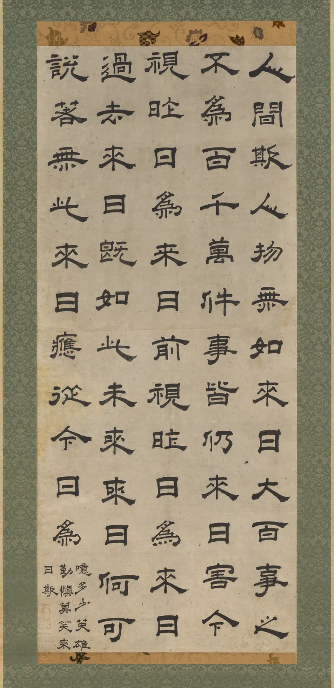
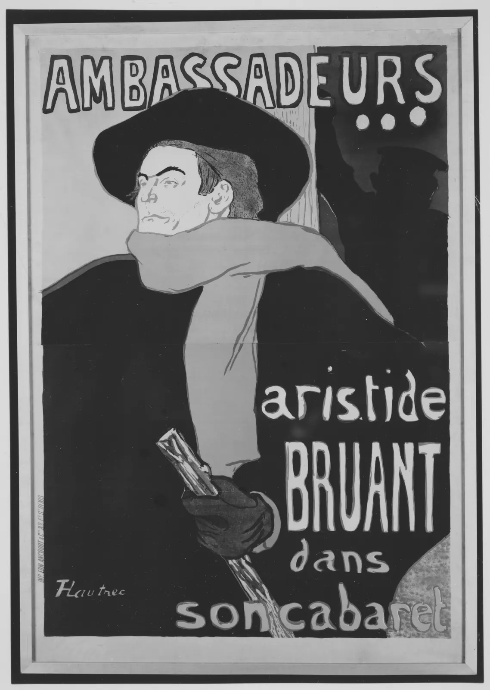

제목과 레터링
휴대폰 화면에서 보기 좋던 로고를 그대로 키워 가게 간판에 붙이면 이상하게 헐거워 보인다. 글자 사이가 벌어지고, 가는 획은 맥없이 가늘고, 둥근 글자는 혼자 작아 보인다. 길 건너에서 보면 획이 많은 글자는 한 덩어리로 뭉개진다. 본문 글자를 짜는 규칙은 대부분 "작은 글자를 오래 편하게 읽게" 하려고 생겼다. 제목과 간판의 글자는 크고, 짧고, 멀리서 한눈에 읽힌다. 그래서 규칙이 달라진다. 이 장은 큰 글자를 짜는 법과, 글꼴 대신 손으로 글자를 그리는 레터링을 다룬다.
- 글자가 커질수록 자간을 좁히는 이유와, 그 규칙이 무너지는 지점을 시뮬레이터로 확인한다.
- 광학 크기(본문용과 제목용 글꼴)의 차이와, 제목의 행간·광학 정렬을 설명한다.
- 쓰기(캘리그래피), 그리기(레터링), 짜기(타이포그래피)를 구별하고, 넓은 펜과 붓이 획의 굵기 변화를 만드는 원리를 안다.
- 가로획 보정처럼 큰 글자에서 드러나는 시각 보정을 가상의 로고타입에 적용한다.
- 간판 글자의 크기를 시각(視角)과 시력으로 계산하고, 멀리서 볼 글자의 간격을 정한다.
큰 글자는 왜 다르게 짜나
글꼴 디자이너는 글자 사이의 기본 간격(사이드베어링)을 대개 본문 크기에서 고르게 읽히도록 정한다(5장). 작은 글자에서는 눈이 글자 사이의 빈 공간을 넉넉하게 느껴야 글자들이 서로 붙지 않는다. 그런데 이 간격은 em에 대한 비율로 저장되어 있어서, 글자를 열 배로 키우면 간격도 열 배가 된다. 본문에서 알맞던 1 mm 남짓한 틈이 제목에서는 1 cm가 되어, 글자들이 각자 떨어져 서 있는 것처럼 보인다.
그래서 제목은 보통 전체 자간, 곧 트래킹(Tracking)을 조금 좁힌다. 반대로 아주 작은 글자는 조금 넓힌다. 크기마다 다른 트래킹 값을 표로 정해 두고 글자 크기에 따라 자동으로 바꾸는 글꼴도 있다. 아래에서 제목 크기를 바꾸며 알맞은 트래킹을 찾아본다. 아래 그래프 위의 점을 끌면 크기와 트래킹이 함께 바뀐다. 위 칸은 그 크기의 제목, 그 아래 작은 줄은 같은 트래킹을 본문 크기(14px)에 걸었을 때다.
크기가 커지면 자간을 좁힌다
트래킹은 얼마가 정답이라고 말할 수 없다. 글꼴의 기본 간격, 굵기, 낱말의 글자 구성에 따라 다르고, 무엇보다 제목이 전하려는 인상에 달렸다. 좁게 짜면 단단하고 다급하고 현대적인 인상, 넓게 짜면 느긋하고 격식 있고 고요한 인상이 되기 쉽다. 다만 크기가 커질수록 같은 em 값이 더 큰 실제 거리가 된다는 것, 그래서 본문의 간격을 그대로 키우면 헐거워진다는 것은 글꼴과 상관없이 같다. 한글은 기본 간격이 라틴보다 넉넉하게 잡힌 글꼴이 많아, 큰 제목에서 좁히는 폭이 더 클 때가 많다.
규칙이 깨지는 경우도 있다. 일부러 아주 넓게 벌려 글자 하나하나를 별처럼 흩어 놓은 제목, 획이 서로 맞물릴 만큼 좁혀 글자들이 한 덩어리의 그림이 되게 한 로고는 모두 규칙 밖에서 나온다. 그런 디자인이 좋아 보인다면 디자이너가 간격을 "눈으로 보고" 결정했기 때문이다. 기준은 숫자가 아니라 글자 사이의 빈 공간이 고르게 느껴지는가, 그리고 그 고르지 않음이 의도인가다.
광학 크기: 본문용과 제목용
금속 활자 시절에는 같은 이름의 글꼴이라도 크기마다 펀치를 따로 깎았다. 6포인트 활자는 획을 굵게, 속 공간과 글자 사이를 넓게, x높이를 크게 깎았고, 72포인트 활자는 가는 획을 더 가늘게, 간격을 촘촘하게 깎았다. 작은 글자는 종이에 잉크가 번지고 눈이 세부를 놓치는 것을 견뎌야 하고, 큰 글자는 세부가 다 보이기 때문이다. 사진 식자와 디지털 글꼴이 나오며 하나의 원도를 모든 크기로 확대·축소하게 되자, 이 차이가 사라졌다. 이 크기별 조정을 광학 크기(Optical size)라고 부르고, 요즘 글꼴은 본문용(Text)과 제목용(Display) 두 벌을 따로 내거나, 가변 글꼴의 opsz 축(11장)으로 크기에 맞춰 모양을 바꾼다. 한글에도 본문용 명조와 따로 그린 제목용 명조가 있다.
아래는 이 책이 단순하게 만든 세리프 글자 두 벌이다. 본문용은 획 대비가 작고 간격이 넓고, 제목용은 가는 획이 아주 가늘고 간격이 좁다. 크기를 바꾸며 두 벌을 같은 크기로 비교한다. 그림은 실제 화면 크기 그대로다.
본문용과 제목용, 같은 크기에 놓기
제목을 본문용 글꼴로 짜면 헐겁고 둔해 보이고, 본문을 제목용 글꼴로 짜면 가는 획이 사라져 눈이 피곤하다. 광학 크기를 따로 갖춘 글꼴이 아니라면, 앞 절의 트래킹 조정이 그 차이를 일부 메워 준다. 화면에서는 11장에서 본 픽셀 격자가 이 문제를 더 키운다. 제목용 글꼴의 1px도 안 되는 가는 획은 작은 크기에서 회색 안개가 된다.
제목의 행간과 광학 정렬
본문은 줄 사이를 넉넉히 둔다(6장). 여러 줄의 글을 따라가며 다음 줄의 시작을 찾아야 하기 때문이다. 두세 줄짜리 큰 제목은 사정이 다르다. 본문의 행간 비율을 그대로 쓰면 줄 사이 빈 공간이 실제 거리로 너무 커져, 한 문장인 제목이 두 덩어리로 떨어져 보인다. 그래서 제목은 행간을 글자 크기의 1.0~1.2배 근처까지 좁히는 일이 흔하다. 한계는 글자의 생김새가 정한다. 라틴 글자는 g, y, p의 꼬리(디센더)와 다음 줄 대문자·b, d, h의 머리(어센더)가 부딪치고, 한글은 받침과 다음 줄 초성 사이가 막힌다.
큰 글자에서는 정렬도 눈으로 맞춘다. 왼끝을 맞춘 제목의 첫 글자가 따옴표나 둥근 글자(O, ㅇ)면, 수학적으로는 맞았어도 눈에는 들여 쓴 것처럼 보인다. 따옴표를 여백 쪽으로 내밀어 글자의 몸통이 다른 줄과 맞게 하는 것을 따옴표 걸기(Hanging punctuation), 둥근 글자를 조금 내미는 것까지 포함해 광학 정렬(Optical alignment)이라고 한다. 아래에서 제목 두 줄의 행간을 바꾸고 따옴표 걸기를 켜고 끈다.
제목 두 줄: 행간과 따옴표 걸기
제목 행간을 좁히는 것도, 따옴표를 내미는 것도 "숫자로는 맞지 않지만 눈으로는 맞는" 쪽을 고르는 일이다. 활판 시절 식자공은 따옴표 앞의 공목(빈 활자)을 빼서 이런 보정을 손으로 했다. 지금의 조판 프로그램에는 광학 여백 맞춤 기능이 있고, CSS에도 hanging-punctuation 속성이 정의되어 있지만 브라우저 지원이 아직 고르지 않다. 웹 제목에서는 첫 글자에 작은 음수 들여쓰기를 주는 식으로 직접 맞추기도 한다.
쓰기, 그리기, 짜기
글자를 만드는 방법은 크게 셋이다. 붓이나 펜으로 한 번에 써 내려가는 캘리그래피(Calligraphy, 서예), 윤곽을 그리고 고쳐 가며 글자 모양을 짓는 레터링(Lettering), 미리 만든 글자 부품(글꼴)을 늘어놓는 타이포그래피(Typography)다. 캘리그래피는 획의 순서와 도구의 움직임이 글자 모양에 그대로 남는다. 레터링은 어떤 모양이든 그릴 수 있고 고칠 수 있지만, 그 낱말 하나를 위해서만 만든다. 타이포그래피는 같은 "E"를 몇 번이고 똑같이 되풀이할 수 있는 대신, 글자가 놓일 자리를 미리 알지 못한다.
캘리그래피에서 획의 굵기 변화는 장식이 아니라 도구의 물리다. 끝이 납작한 펜(넓은 펜)은 펜촉을 일정한 각도로 쥐고 쓰면, 펜촉의 넓은 면과 수직으로 움직일 때 가장 굵고 나란히 움직일 때 가장 가는 선이 된다. 굵은 곳들을 잇는 선이 기울어 있는 것을 축(Stress, Axis)이라고 부르는데(2장), 라틴 세리프 글꼴의 비스듬한 축은 넓은 펜으로 쓰던 글씨의 흔적이다. 붓은 다르다. 끝이 뾰족하고 털이 휘므로 누르는 힘으로 굵기를 바꾼다. 동아시아 서예의 굵기 변화와 획의 시작·끝 모양(기필·수필)은 붓을 누르고 들고 꺾는 동작에서 나온다. 아래에서 직접 써 본다.
넓은 펜과 붓으로 써 보기

로고타입: 큰 글자의 시각 보정
가게나 단체의 이름을 하나의 글자 그림으로 만든 것을 로고타입(Logotype, 워드마크)이라고 한다. 이미 있는 글꼴로 짜고 간격만 고친 것부터, 처음부터 손으로 그린 레터링까지 폭이 넓다. 로고타입은 크게 쓰이고 오래 보이므로, 본문 크기에서는 묻히던 시각적 착오가 그대로 드러난다. 대표적인 것이 셋이다.
- 가로획이 더 굵어 보인다. 자로 잰 굵기가 같아도 가로로 누운 획이 세로로 선 획보다 굵어 보이기 쉽다. 그래서 고딕 글꼴도 대개 가로획을 세로획보다 조금 가늘게 그린다. 한글처럼 가로획이 여러 겹 쌓이는 글자(ㅌ, ㅂ, 三)에서 특히 두드러진다.
- 둥근 글자는 작아 보인다. 같은 높이로 그린 원(ㅇ, O)은 네모(ㅁ, H)보다 작아 보인다. 둥근 글자를 기준선과 윗선 밖으로 조금 내미는 오버슈트(Overshoot)로 맞춘다(2장).
- 획이 만나는 곳은 뭉친다. 획이 겹치는 모서리와 교차점은 잉크(또는 빛)가 몰려 진해 보인다. 큰 글자에서는 그 자리를 조금 깎아 내기도 한다.
아래는 가상의 서점 "책방 E"의 로고타입을 이 책이 단선 획으로 그린 것이다. 왼쪽은 가로획과 세로획을 자로 잰 듯 같은 굵기로, 오른쪽은 가로획을 슬라이더 비율만큼 가늘게 그렸다. 경계선을 끌어 비교한다.
책방 E 로고타입: 가로획 보정
수치로는 0.9가 "보정이 맞는 값"처럼 보이지만, 이것도 글자의 획 수와 굵기, 바탕과 글자의 색에 따라 다르다. 어두운 바탕의 밝은 글자는 빛이 번져 보이는 만큼 획이 더 굵어 보이므로(11장의 다크 모드 이야기와 같은 현상이다), 간판처럼 바탕이 어두우면 전체 굵기를 조금 줄이기도 한다. 결국 마지막 판단은 실제 크기, 실제 색, 실제 거리에서 눈으로 한다.
간판의 글자: 멀리서 읽히는가
간판은 가장 큰 글자이면서 가장 멀리서 읽히는 글자다. 크기를 정하는 기준은 실제 길이가 아니라 눈에 맺히는 크기, 곧 시각(視角, Visual angle)이다(7장). 높이 \(h\)인 글자를 거리 \(d\)에서 보면 그 글자가 차지하는 각도는 아래와 같다. 시력은 구별할 수 있는 가장 작은 각도, 곧 최소 분해각(Minimum angle of resolution, MAR)으로 적는다. 우리가 쓰는 소수 시력 1.0은 1분(1/60°)의 틈을 구별하는 시력이고, 0.5는 2분이다.
멀리서 볼수록 생기는 문제는 글자가 작아지는 것만이 아니다. 획과 획, 글자와 글자 사이의 좁은 틈이 먼저 사라진다. 시력의 한계보다 작은 틈은 메워져 보이고, 획이 많은 한글 글자("책"의 ㅊ과 ㅐ와 ㄱ)는 그 틈이 여럿이라 먼저 뭉개진다. 글자들이 너무 붙어 있으면 각각은 알아볼 크기여도 옆 글자와 섞여 읽기 어려워지는데, 이를 밀집 효과(Crowding)라고 부른다. 주로 시야 주변에서 강하게 일어나는 현상이지만, 흐릿하게 볼 때도 글자 사이가 좁으면 글자끼리 녹아 붙기 쉽다. 그래서 멀리서 볼 간판 글자는 1절에서 본 제목의 규칙과 반대로, 자간을 좁히지 않고 오히려 조금 여는 쪽이 낫다.
아래 위쪽 길 그림에서 사람을 끌어 간판과의 거리를 바꾼다. 아래 칸은 그 거리에서 그 시력으로 보이는 간판을 같은 크기로 확대해 보여 준다.
멀리서 보는 간판

한국의 거리에도 손으로 그린 큰 글자의 긴 전통이 있다. 궁궐과 사찰, 서원의 현판은 이름난 서예가가 쓴 글씨를 나무에 새기고 칠한 것으로, 건물 이름을 멀리서도 알아보게 하는 간판이었다. 20세기에는 페인트로 간판을 그리는 간판 화가들이 가게 이름과 극장의 영화 간판을 손으로 그렸고, 영화 포스터와 책 표지의 제목 글자도 디자이너가 직접 그리는 일이 많았다. 이런 글자를 그 시절에는 흔히 "도안 문자"라고 불렀다. 디지털 글꼴과 출력 간판이 퍼지며 손 간판은 줄었지만, 낱말 하나를 그 자리에 맞춰 그리는 레터링의 방법은 로고타입과 제목 디자인에 그대로 남아 있다. 실제 간판이나 포스터의 글자를 베끼는 대신, 그 방법을 배워 자기 글자를 그리는 것이 레터링을 익히는 길이다.
간판 레터링 작업대
마지막으로 이 장의 도구를 한데 모은다. 가로 1.8 m, 세로 0.45 m의 간판 판 위에 "책방 E" 레터링을 놓는다. 글자 높이와 추가 자간, 색 조합을 바꾸면, 아래에 세 거리(가게 앞 3 m, 길 건너 15 m, 골목 입구 40 m)에서 시력 0.5로 보이는 모습이 함께 바뀐다. 레터링 위를 좌우로 끌면 판 위에서 글자 묶음의 자리를 옮길 수 있다.
책방 E 간판 작업대
작업대에서 숫자를 고르는 일은 출발점일 뿐이다. 간판은 낮에는 햇빛 아래, 밤에는 조명 아래에서 보이고, 보는 사람은 걸으며 비스듬히 본다. 그래서 레터링 작가들은 실제 크기의 종이 견본을 만들어 걸어 보고, 낮과 밤에 한 번씩, 정면과 비스듬한 각도에서 한 번씩 확인한 뒤에야 판에 옮긴다.
서윤의 조판 노트
길 건너에서 "책"이 뭉개졌다
8월 첫 주, 서윤은 여름 내내 다듬어 온 간판 로고타입 "책방 E"를 마무리하기로 했다. 영문 E의 비례는 2장에서, 한글의 틀과 받침 처리는 3장에서, 글자 사이의 커닝은 5장에서 정해 두었다. 남은 것은 그것을 가로 1.8 m 판 위의 실제 글자로 만드는 일이었다.
서윤은 1:5 크기(판 360 × 90 mm)로 연필 스케치를 다듬고, 화면에서 확대해 보며 간격을 조금 좁혔다. 제목은 크게 쓸수록 좁힌다는 것을 1절에서 배웠기 때문이다. 그런데 한도경이 그 시안을 실제 크기로 뽑아 서점 유리창에 붙이자고 했다. 두 사람은 길 건너(약 15 m)와 골목 입구(약 40 m)까지 걸어갔다. 15 m에서는 괜찮았다. 40 m에서 "책"의 ㅊ과 ㅐ 사이가 메워져 한 덩어리가 되었고, "방"과 "E" 사이도 붙어 보였다. 도경은 안경을 벗고 다시 보더니 말했다. "글자도 그림처럼 사이를 봐. 멀리서 볼 그림은 덩어리 사이를 넉넉히 비워 두잖아."
이 책의 계산으로 높이 300 mm의 글자는 40 m에서 약 26분의 시각을 차지한다. 스넬렌 시력표의 시력 1.0 기준 글자(5분)의 5배 남짓이라 글자 자체는 읽히는 크기다. 문제는 틈이었다. 시력 0.5인 사람의 최소 분해각은 2분이고, 40 m에서 2분은 23.3 mm다. 획 굵기와 획 사이 틈이 이보다 좁으면 그 사람에게는 메워져 보인다. 서윤은 이 23.3 mm(글자 높이의 7.8%)를 획 굵기와 가장 좁은 속 공간의 확인 기준으로 노트에 적고, 2·3장에서 정한 비례가 그 기준을 넘는지 1:1 견본으로 다시 재기로 했다.
서윤의 선택은 이렇다. 간판 판은 1,800 × 450 mm, 바탕은 책방 초록 #2f7d5b, 글자는 크림 #ffe2d7(대비 4.07, 가을에 포스터에서 쓴 조합). 한글 네모틀의 높이는 300 mm로 두어(5장의 실제 크기 시안은 글자 높이가 50 cm 가까웠다) 위아래 여백을 75 mm씩 남긴다. 5장의 커닝 값은 em 비율 그대로 두고, 멀리서 볼 간판이므로 전체에 +0.03 em(300 mm 높이에서 9 mm)을 더 연다. 이 책의 예시 로고타입으로 재면 레터링 폭은 약 909 mm, 좌우 여백은 약 445 mm씩이다. 한글의 가로획은 세로획의 0.92배로 가늘게 그리고(E는 2장의 7/8 그대로), 획 끝은 붓으로 쓴 느낌이 남도록 둥글게 마무리한다. 확인 거리는 3 m, 15 m, 40 m 세 곳으로 정했다.
작업 순서도 정했다. 1:5 연필 스케치를 펜으로 다듬어 스캔하고 벡터로 옮긴 뒤, 1:1 종이 견본을 유리창에 붙여 낮과 밤에 세 거리에서 확인하고 나서야 간판 업체에 넘긴다. 웹사이트 머리의 SVG 로고(11장)는 이 최종 레터링에서 뽑는다. 도경은 견본을 보고 "이제 사이가 보인다"고만 했다.
#2f7d5b
레터링#ffe2d7
글자 높이300 mm
추가 자간+0.03 em
핵심 정리
- 글자 사이의 기본 간격은 em 비율이라 글자를 키우면 실제 간격도 커진다. 그래서 큰 제목은 대개 트래킹을 좁히고, 아주 작은 글자는 넓힌다. 같은 값을 본문 크기에 걸면 무너진다.
- 광학 크기는 크기마다 획 대비·간격·x높이를 다르게 하는 조정이다. 제목용 글꼴을 작게 쓰면 가는 획이 사라지고, 본문용 글꼴을 크게 쓰면 둔하고 헐겁다. 가변 글꼴의 opsz 축이 이를 이어 준다.
- 큰 제목은 행간을 좁히고(대개 1.0~1.2배 근처, 디센더와 받침이 한계), 따옴표 걸기 같은 광학 정렬로 "눈으로 맞는" 쪽을 고른다.
- 쓰기(캘리그래피)는 도구의 움직임이, 그리기(레터링)는 윤곽의 손질이, 짜기(타이포그래피)는 되풀이되는 부품이 글자를 만든다. 넓은 펜은 펜촉 각도로, 붓은 누르는 힘으로 굵기 변화를 만든다.
- 큰 글자에서는 가로획이 굵어 보이고, 둥근 글자가 작아 보이고, 획이 만나는 곳이 뭉쳐 보인다. 로고타입은 이를 가로획 보정·오버슈트 같은 시각 보정으로 맞추되, 마지막 판단은 실제 크기·색·거리에서 한다.
- 간판 글자의 크기는 시각 θ = 2·arctan(h/2d)과 최소 분해각(소수 시력 V에서 1′/V)으로 따진다. 멀리서는 좁은 틈이 먼저 사라지므로, 멀리서 볼 글자는 제목과 달리 자간을 조금 연다. 업계의 어림셈은 조건을 확인하고 쓴다.
확인 퀴즈
1. 본문에서 알맞던 글꼴로 96px짜리 제목을 짰더니 글자들이 각자 떨어져 보인다. 가장 알맞은 설명과 처방은?
2. 가는 획이 아주 가는 제목용(Display) 세리프 글꼴로 휴대폰 화면의 13px 본문을 짰다. 일어나기 쉬운 일은?
3. 높이 300 mm의 간판 글자를 40 m 떨어진 곳에서 본다. 이 글자가 차지하는 시각에 가장 가까운 것은? (1′ = 1/60°)
4. 신문 제목에서는 트래킹을 좁히는데, 40 m 밖에서 읽힐 간판 글자는 오히려 자간을 조금 여는 쪽을 택했다. 그 근거로 가장 알맞은 것은?
출처와 글꼴
- 시력과 최소 분해각: 스넬렌 시력표의 설계(기준 글자 높이 5′, 획과 틈 1′)와 소수 시력의 정의는 안과·검안 교과서의 표준 내용이다. 이 장의 시각 계산은 그 정의로 이 책이 직접 했다.
- 밀집 효과(crowding)는 시지각 연구에서 널리 다뤄진 현상으로, 주로 주변 시야에서 강하게 나타난다. 이 장은 그 결론을 정량적으로 쓰지 않고 간격을 여는 이유의 설명으로만 썼다.
- OpenType 명세의 등록 축
opsz(광학 크기). 금속 활자의 크기별 펀치 조각은 활자사의 일반적인 서술을 요약했다. - W3C, CSS Text Module Level 4 —
hanging-punctuation. W3C, WCAG 2.2 — 대비비 정의(작업대의 대비 계산은 이 책의 엔진ART.contrast). - 글꼴: 시뮬레이터에 Noto Sans KR(Google·Adobe 계열, SIL Open Font License 1.1)과 나눔명조 Nanum Myeongjo(Sandoll Communication 제작·NAVER 배포, SIL Open Font License 1.1)를 Google Fonts로 불러 쓴다. "책방 E" 로고타입과 본문용·제목용 세리프 모형, 그림 1의 글자는 이 책이 직접 그린 가상의 예시이며 실제 글꼴이나 로고를 본뜨지 않았다.